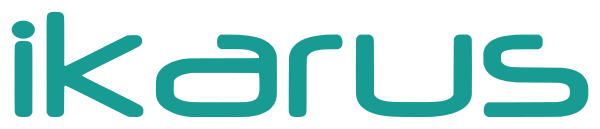
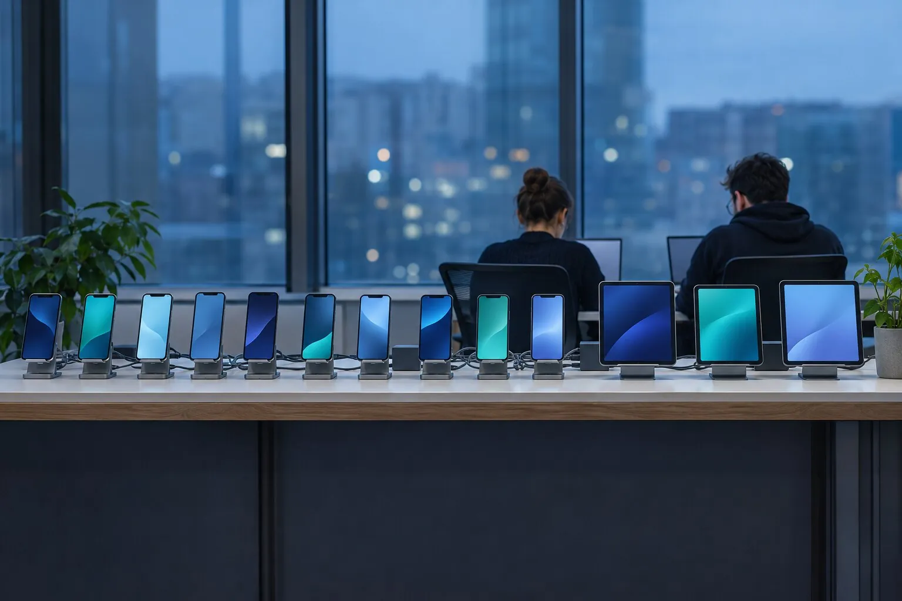
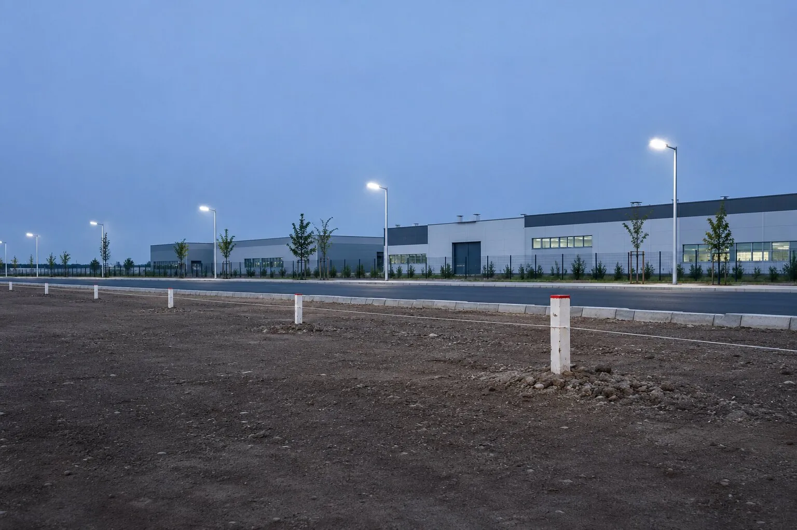
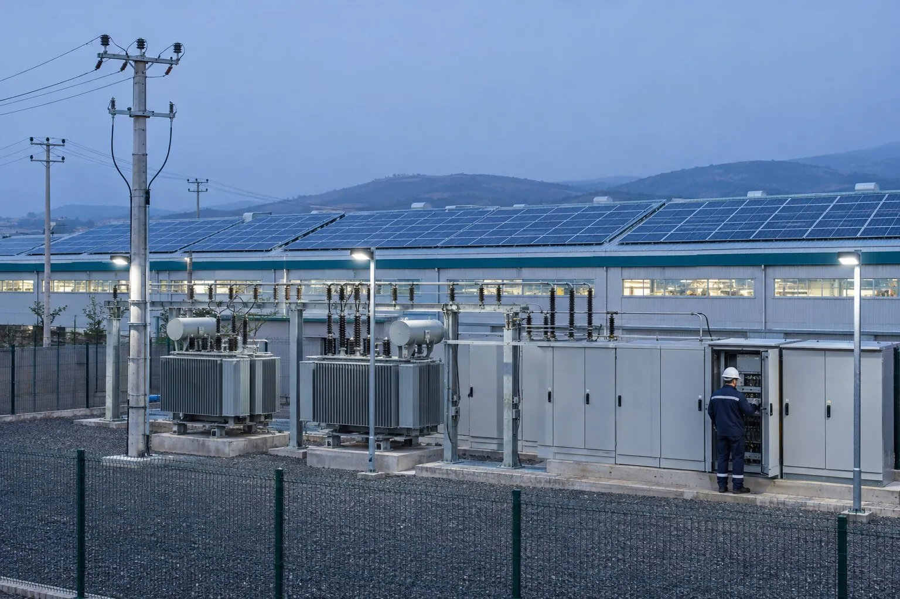
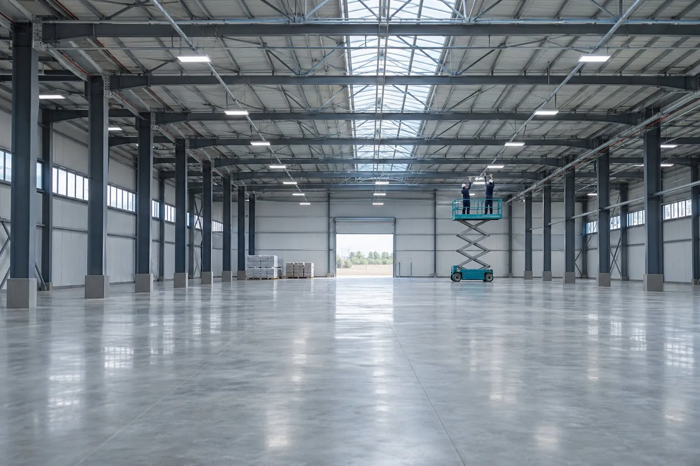
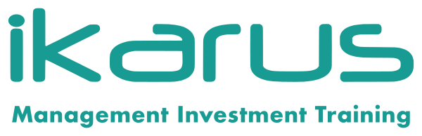
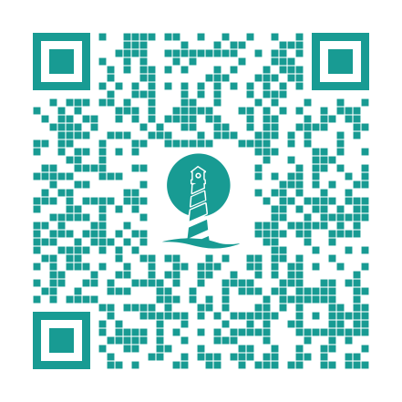

Yazılım tanıtımına %70'e varan destek
İçindekiler
Kasım sayısında yazılım şirketlerinin yurt dışı tanıtım destekleri, teşvik belgeli arsalarda yıl sonu bildirimi ve endüstri bölgelerinin yeni elektrik yükümlülükleri öne çıkıyor.

Yazılım İhracatı Destekleri
Ticaret Bakanlığı, 10962 sayılı Hizmet İhracatının Tanımlanması, Sınıflandırılması ve Hizmet Sektörlerinin Desteklenmesi Hakkında Karar kapsamında bilişim sektöründeki şirketlerin yurt dışı tanıtım, pazarlama ve altyapı giderlerini desteklemektedir. Dijital oyun, mobil uygulama, ticari yazılım, yapay zekâ, siber güvenlik, büyük veri, blok zincir, akıllı şehir çözümleri, gömülü yazılım, iletişim hizmetleri ve genel bilişim hizmetleri bu kapsamdadır.
1. Destekten Yararlanma Koşulları
Şirketin ayrıca aşağıdaki koşulları sağlaması gerekmektedir:
- Türkiye'de anonim şirket (A.Ş.) veya limited şirket (Ltd. Şti.) olarak kurulmuş olması,
- Tüm operasyonel harcamaların şahsi hesaplardan değil, doğrudan şirkete ait banka hesaplarından veya şirket kredi kartından yapılması,
- App Store, Google Play, Steam ve konsol mağazaları gibi platformlardaki yayıncı ya da geliştirici hesaplarının şirket adına kayıtlı olması,
- Hizmet İhracatçıları Birliğine üye olunması.
2. Dijital Ürün Tanıtım Desteği
Yazılım, dijital oyun ve mobil uygulamaların yurt dışı lansman ve tanıtım harcamaları %50 oranında desteklenmektedir. Üst limit dijital ürün başına yıllık 15.000.000 TL, toplamda ise yıllık 50.000.000 TL'dir.
3. Hedef Ülke İlave Desteği
Dijital ürün tanıtımının Ticaret Bakanlığınca belirlenen hedef ülkelere yönelik olması hâlinde destek oranına 20 puan eklenir; yurt dışı dijital reklam ve ürün lansmanı giderlerinin %70'i karşılanabilir.
4. Platform Komisyon Desteği
Uygulama mağazalarına (App Store, Google Play, Steam, konsol mağazaları ve benzeri platformlar) yurt dışı satışlar karşılığında ödenen komisyon giderleri %50 oranında, dijital ürün başına 4.000.000 TL ve yıllık 20.000.000 TL'ye kadar desteklenmektedir.
5. Barındırma (Hosting) Desteği
Yazılım, oyun ve uygulamaların yurt dışındaki kullanıcılara sunulması için yapılan bulut ve sunucu (barındırma) giderleri %50 oranında ve yıllık 5.000.000 TL'ye kadar desteklenmektedir.
6. Yazılım Lisans Desteği
Yurt dışı pazarlama faaliyetlerinde kullanılan yazılım lisanslarının satın alma ve kiralama giderleri %50 oranında ve yıllık 2.500.000 TL'ye kadar karşılanmaktadır. Desteklenen lisans kategorileri şunlardır:
7. Uluslararası Kuruluşlara Üyelik Desteği
Sektörle ilgili uluslararası kuruluşlara üyelik giderleri %50 oranında ve yıllık 2.500.000 TL limit dâhilinde desteklenmektedir.
8. Belgelendirme Desteği
Yazılım testleri, kalite belgeleri ve uluslararası akreditasyonlara ilişkin giderler %50 oranında ve yıllık 4.000.000 TL'ye kadar desteklenmektedir.
9. Rapor ve Veri Tabanı Üyeliği Desteği
Hedef pazarlara yönelik strateji oluşturulmasında kullanılan sektörel rapor ve veri tabanı üyelik giderleri %50 oranında ve yıllık 2.500.000 TL'ye kadar desteklenmektedir. Desteklenen veri tabanları şunlardır:
10. Fuar ve Etkinlik Katılım Destekleri
11. Örnek Senaryo: Bir Yazılım Şirketi Ne Kadar Destek Alabilir?
Tek ürün için yıllık 40.000.000 TL yurt dışı reklam bütçesi bulunan bir yazılım şirketi, diğer kalemlerde de uygun harcama yaparsa şu destek üst limitlerinden yararlanabilir:
| Destek kalemi | Üst limit | Dönem ve kapsam |
|---|---|---|
| Dijital ürün tanıtımı | 15.000.000 TL | Yıllık, ürün başına |
| Platform komisyonu | 4.000.000 TL | Ürün başına |
| Barındırma (hosting) | 5.000.000 TL | Yıllık |
| Yurt içi istihdam | 90.000 TL | Aylık, personel başına; en fazla 5 kişi |
Örnek, limit planlamasıyla toplam destek potansiyelinin yükselebileceğini gösterir.
12. 2026 Bilişim Teşvikleri: Güncel Limitler
Destek kalemleri ve 2026 yılı üst limitleri aşağıda toplu olarak yer almaktadır. Temel oran %50'dir; hedef ülkelerde dijital ürün tanıtımı ve yurt dışı etkinlik katılımı %70 oranında desteklenir.
| Destek kalemi | Oran | 2026 üst limit |
|---|---|---|
| PAZARLAMA, TANITIM VE SATIŞ | ||
| Yurt dışı reklam ve pazarlama | %50 | 25.000.000 TL / yıl |
| Dijital ürün tanıtımı (bilişim) | %50 | 50.000.000 TL / yıl (ürün başına 15.000.000 TL) |
| Platform komisyonu (bilişim) | %50 | 20.000.000 TL / yıl (ürün başına 4.000.000 TL) |
| Acente komisyonu | %50 | 6.000.000 TL / yıl |
| ALTYAPI, LİSANS VE ÜYELİK | ||
| Barındırma (hosting) | %50 | 5.000.000 TL / yıl |
| Yazılım lisansı | %50 | 2.500.000 TL / yıl |
| Rapor ve veri tabanı üyeliği | %50 | 2.500.000 TL / yıl |
| Uluslararası kuruluşlara üyelik | %50 | 2.500.000 TL / yıl |
| İSTİHDAM VE YURT DIŞI BİRİM | ||
| Yurt içi istihdam (tanıtım/pazarlama) | %50 | Aylık 90.000 TL / personel (aynı anda en fazla 5 kişi) |
| Yurt dışı istihdam (tanıtım/pazarlama) | %50 | Aylık 250.000 TL / personel (aynı anda en fazla 5 kişi) |
| Yurt dışı birim kirası (ofis / paylaşımlı ofis) | %50 | 6.000.000 TL / birim / yıl |
| ETKİNLİK, BELGELENDİRME VE TESCİL | ||
| Yurt dışı etkinlik katılımı | %50 | 1.500.000 TL / etkinlik · prestijli etkinlikte 3.000.000 TL |
| Yurt içi etkinlik katılımı | %50 | 600.000 TL / etkinlik · prestijli etkinlikte 1.200.000 TL |
| Belgelendirme | %50 | 4.000.000 TL / yıl |
| Tescil koruma | %50 | 2.500.000 TL / yıl |
Tablodaki tutarlar üst limitlerdir. Uygulanabilir destek tutarı; şirketin sektör sınıflandırmasına, ürün sayısına, harcama türlerine ve harcamaların belgelendirilmesine göre değişir.
Şirketinizin hangi destek kalemlerinden yararlanabileceğinin belirlenmesi, yıllık limit planlamasının yapılması ve başvuru dosyalarının hazırlanması konusunda destek sağlayabiliriz.

Geçici Emlak Vergisi Muafiyeti
Yatırım teşvik belgesi (YTB) kapsamındaki yatırımlar için edinilen ya da tahsis edilen arsa ve araziler, izleyen bütçe yılından tamamlama vizesinin yapıldığı yılın sonuna kadar emlak vergisinden geçici olarak muaftır. Muafiyet kendiliğinden uygulanmaz; belediyeye süresinde yapılan bildirime bağlıdır.
1. Yasal Dayanak
1319 sayılı Emlak Vergisi Kanunu'nun 15'inci maddesinin ilgili hükümleri şöyledir:
“Yatırım Teşvik Belgesi kapsamında yapılan yatırımlar için iktisap olunan veya tahsis edilen araziler Yatırım Teşvik Belgesi süresince.
Geçici olarak muaflıktan istifade için arazinin bu maddede yazılı cihetlere tahsis edilmiş olduğunun ilgili vergi dairesine bütçe yılı içinde bildirilmesi şarttır. Muafiyetler, arazinin tayin olunan cihetlere tahsis edildiği yılı takibeden bütçe yılından başlar. Bütçe yılı içinde bildirim yapılmazsa muafiyet, bildirimin yapıldığı yılı takibeden bütçe yılından muteber olur. Bu takdirde bildirimin yapıldığı bütçe yılının sonuna kadar geçen yıllara ait muafiyet hakkı düşer.”
2. Genel Tebliğ Açıklamaları
69 Seri No.lu Emlak Vergisi Kanunu Genel Tebliği'nin (RG: 29.09.2016/29842) 4'üncü maddesine göre:
- YTB kapsamındaki yatırımlar için edinilen veya tahsis edilen araziler, YTB'nin tamamlama vizesi yapılıncaya kadar geçici muafiyetten yararlanabilir.
- Kanun'un 12'nci maddesi gereği buradaki arazi tabiri arsaları da kapsar.
- Muafiyet, arazinin edinildiği veya tahsis edildiği yılı takip eden bütçe yılından başlar ve tamamlama vizesinin yapıldığı yılın sonuna kadar sürer.
- 01.01.2017'de yürürlüğe giren düzenleme, bu tarihten sonra alınan YTB'lere uygulanır.
3. Özelge ile Teyit
Ankara Vergi Dairesi Başkanlığının 30.05.2017 tarihli ve 90792880-175.01[2016/131]-171873 sayılı özelgesi de uygulamayı teyit etmektedir: süresi içinde emlak vergisi bildirimi ile YTB'nin bir örneğinin belediyeye verilmesi şartıyla, YTB kapsamındaki binalar Kanun'un 5'inci maddesinin (g) bendine göre 5 yıl, arsa ve araziler ise 15'inci maddesinin (e) bendine göre tamamlama vizesi yapılıncaya kadar geçici muafiyetten yararlanabilmektedir.
4. Muafiyetten Yararlanma Şartları
Genel Tebliğ'in 4'üncü maddesinin üçüncü fıkrasına göre aşağıdaki iki şartın birlikte sağlanması gerekir:
5. Bildirim Süresi: Kritik Husus
Bildirim, arazinin edinildiği veya tahsis edildiği bütçe yılı içinde yapılmazsa muafiyet ancak bildirimin yapıldığı yılı izleyen yıldan itibaren geçerli olur; bildirim yılının sonuna kadar geçen yıllara ait muafiyet hakkı kaybedilir.
Dikkat: YTB kapsamında 2026'da edinilen veya tahsis edilen arsa ve arazilerde 2027 muafiyetinin kaybedilmemesi için bildirimin 31 Aralık 2026'ya kadar yapılması gerekir.
6. Belediyeye Başvuru
Emlak Vergisi Kanunu'nun 37'nci maddesine göre Kanun'da geçen "vergi dairesi" tabiri belediyeleri ifade eder; bildirim, arazinin bulunduğu belediyenin emlak vergisi birimine yapılır. Örnek müracaat yazısında başvuruya şu belgeler eklenmektedir:
Belediyeye sunulacak müracaat yazısının ve eklerinin hazırlanması konusunda destek sağlayabiliriz.

EB'lerde Elektrik PiyasasıYeni
19 Ekim 2026 tarihli ve 33405 sayılı Resmî Gazete'de yayımlanan “Organize Sanayi Bölgelerinin ve Endüstri Bölgelerinin Elektrik Piyasası Faaliyetlerine İlişkin Yönetmelikte Değişiklik Yapılmasına Dair Yönetmelik” ile Ana Yönetmeliğin 7'nci ve 11'inci maddelerine yeni fıkralar eklenmiştir. Bu bölüm, değişikliğin dağıtım lisanslı endüstri bölgelerine (EB) etkilerini ele almaktadır.
1. Düzenlemenin Getirdikleri
Talimatların yerine getirilmemesi ya da görevli tedarik şirketi ve TEİAŞ'ın talep ettiği bilgi ve verilerin paylaşılmaması hâlinde, bu bölgeler hakkında Elektrik Piyasası Kanunu kapsamında yaptırım uygulanabilecektir.
2. EB'lerin Yeni Konumu
Dağıtım lisansı sahibi EB'ler artık yalnızca elektrik dağıtım altyapısı sunan kuruluşlar değil, doğrudan sorumlu sistem aktörleridir: görevli tedarik şirketi ile TEİAŞ arasında acil durum iletişimini kurmak, talimatları zamanında uygulamak, kayıt altına almak ve istenen verileri eksiksiz iletmekle yükümlüdür.
3. Lisanssız Üretim Tesisi Bulunmayan EB'ler
Lisanssız üretim tesisi bulunmayan bir EB için lisanssız üreticiye özgü fiilî bir operasyon yükü doğmaz. Ancak EB, dağıtım lisansı sahibi olarak görevli tedarik şirketiyle koordinasyonu sağlamak, acil durum talimatlarını uygulamak ve istenen verileri süresinde ve eksiksiz iletmekle yükümlüdür.
Sonuç olarak düzenleme, dağıtım lisansı sahibi EB'leri arz güvenliği zincirinin bir parçası hâline getirmektedir. Dağıtım lisanslı EB'ler, lisanssız üretim tesisi olmasa da talimat, veri paylaşımı, TEİAŞ bildirimi ve yaptırım riski bakımından hazırlıklı olmalıdır.

YTB — İlave Teşvik ve İstisnalar
Yatırım teşvik belgesinin (YTB) sağladığı temel destekler “Yatırımlarda Devlet Yardımları Hakkında Karar” ile düzenlenmektedir. Belge ve kapsamındaki yatırımlar, bunun yanında farklı kanunlardaki vergi, harç ve mülkiyet hükümleri sayesinde ek avantajlardan da yararlanmaktadır. Belge sahibi yatırımcıların yararlanabileceği ilave teşvik ve istisnalar aşağıda özetlenmiştir.
| Destek unsuru | Yasal dayanak | Kapsam ve süre |
|---|---|---|
| İnşaat işlerinde KDV istisnası (imalat sanayii ve turizm) | 3065 s. KDV Kanunu geç. m. 37 9770 s. Cumhurbaşkanı Kararı | Belge kapsamındaki inşaat işlerine ilişkin mal teslimleri ve hizmetler; 31.12.2028'e kadar |
| İmar ile ilgili harç istisnaları | 2464 s. Belediye Gelirleri Kanunu m. 80 | YTB kapsamında inşa edilen yapı ve tesisler için altı belediye harcı |
| Harç istisnası | 492 s. Harçlar Kanunu | YTB'ye ilişkin belirtilen kâğıtlara dair işlemler (bkz. s. 9) |
| Damga vergisi istisnası | 60 Seri No.lu Damga Vergisi Kanunu Genel Tebliği m. 9/11-(a) | YTB'ye ilişkin belirtilen kâğıtlar (bkz. s. 9) |
| Bina (emlak) vergisi muafiyeti | 69 Seri No.lu Emlak Vergisi Kanunu Genel Tebliği m. 3 | İnşaatın sona erdiği yılı izleyen bütçe yılından itibaren 5 yıl |
| Arazi (emlak) vergisi muafiyeti | 69 Seri No.lu Emlak Vergisi Kanunu Genel Tebliği m. 4 | Arsa ve arazide vize yılının sonuna kadar (bkz. Bölüm 02) |
1. İmar ile İlgili Harç İstisnaları
2464 sayılı Belediye Gelirleri Kanunu'nun 80'inci maddesi uyarınca YTB kapsamında inşa edilen yapı ve tesisler aşağıdaki harçlardan müstesnadır:
2. Harç ve Damga Vergisi İstisnası
YTB kapsamındaki yatırım mallarına ilişkin aşağıdaki kâğıtlara dair işlemler 492 sayılı Harçlar Kanunu uyarınca harçtan; kâğıtların kendisi ise 60 Seri No.lu Damga Vergisi Kanunu Genel Tebliği'nin 9/11-(a) maddesi uyarınca damga vergisinden müstesnadır:
- YTB sahibi yatırımcılar ile yatırım mallarının üreticileri ve tedarikçileri arasında düzenlenen kâğıtlar,
- Münhasıran yatırım döneminde belge kapsamındaki yatırıma yönelik gayri maddi hakların kiralanması ve satın alınmasına ilişkin kâğıtlar,
- Belge kapsamındaki sabit kıymetlerin imal ve inşasına ilişkin sözleşme, taahhütname, teminat ve benzeri kâğıtlar,
- Bu yatırımlara yönelik danışmanlık ve teknik müşavirlik hizmetlerine ilişkin kâğıtlar.
3. Emlak Vergisi Muafiyetleri
4. İnşaat İşlerinde KDV İstisnası
3065 sayılı KDV Kanunu'nun geçici 37'nci maddesi uyarınca imalat sanayii ve turizme yönelik YTB sahiplerine, belge kapsamındaki inşaat işlerine ilişkin mal teslimleri ve hizmetler KDV'den müstesnadır. 7394 sayılı Kanun'la 1 Mayıs 2022'den itibaren eski iade sisteminin yerini alan istisnanın süresi, 9770 sayılı Cumhurbaşkanı Kararı ile 31.12.2028'e uzatılmıştır. İstisna için bağlı olunan vergi dairesinden istisna belgesi alınır.
Teşvik belgeli yatırımlarınızda bu istisna ve muafiyetlerin eksiksiz uygulanması ve ilgili idarelere yapılacak bildirimlerin takibi konusunda destek sağlayabiliriz.


Departmanı